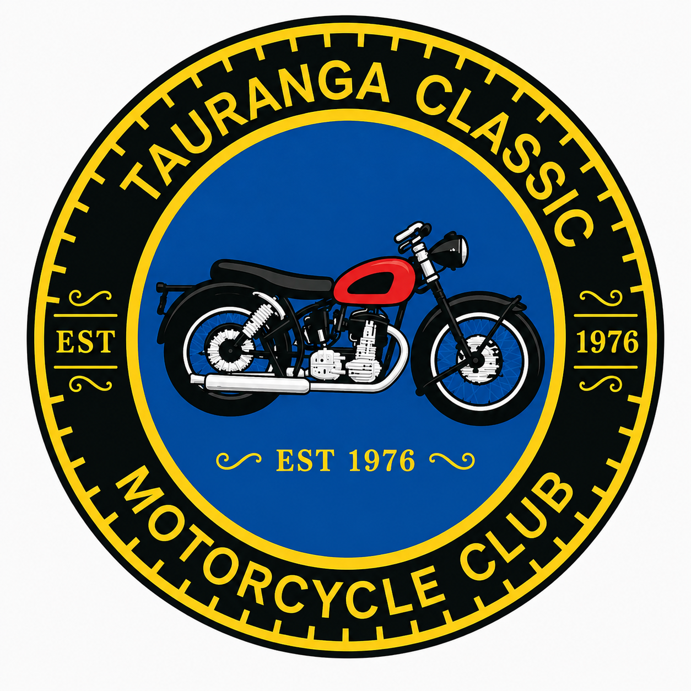
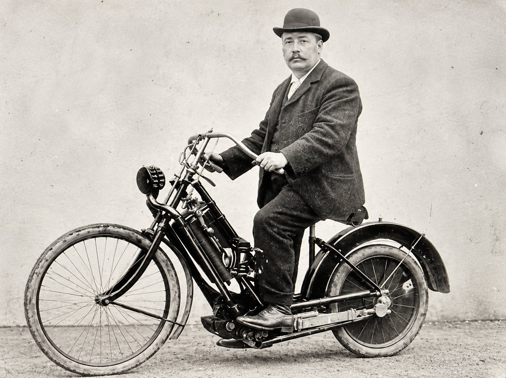
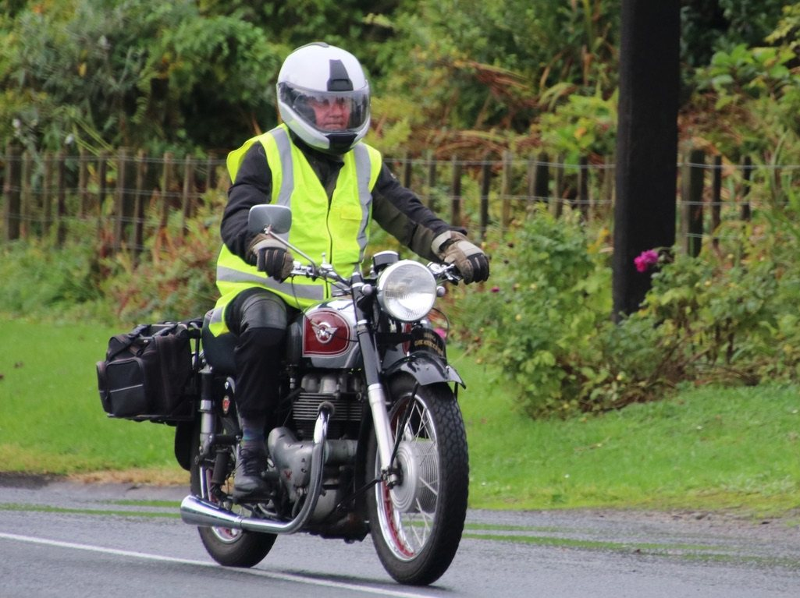
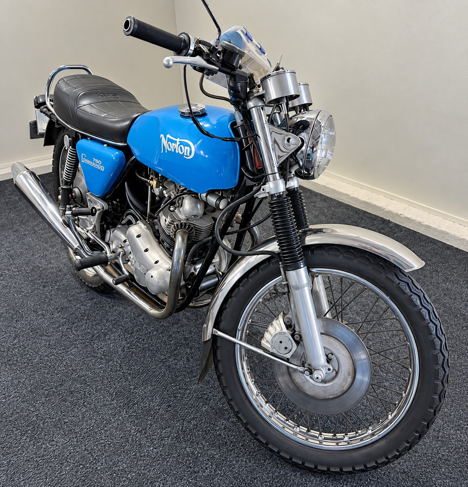
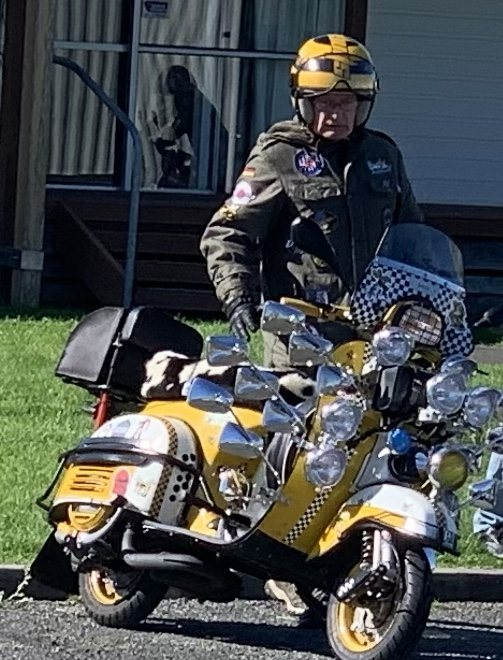
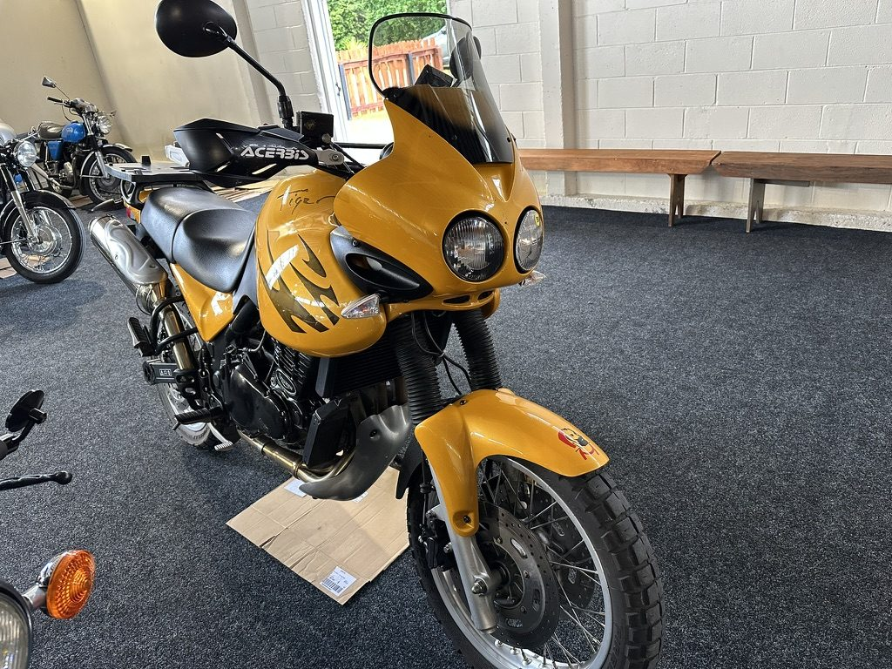
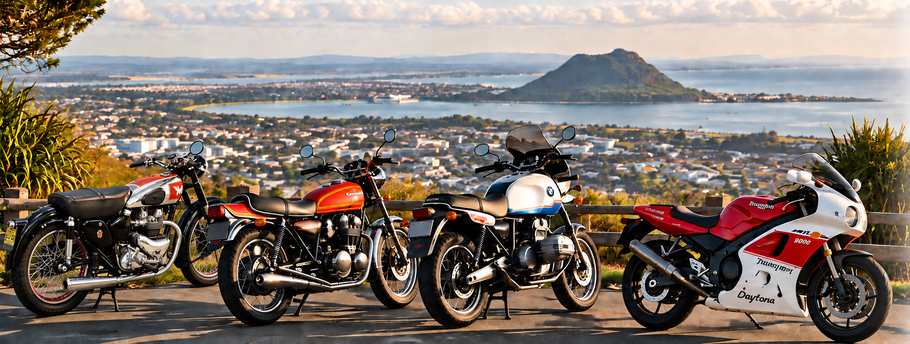
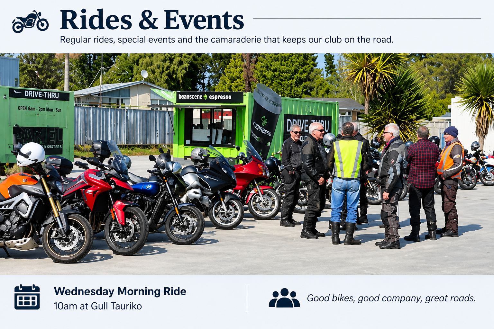
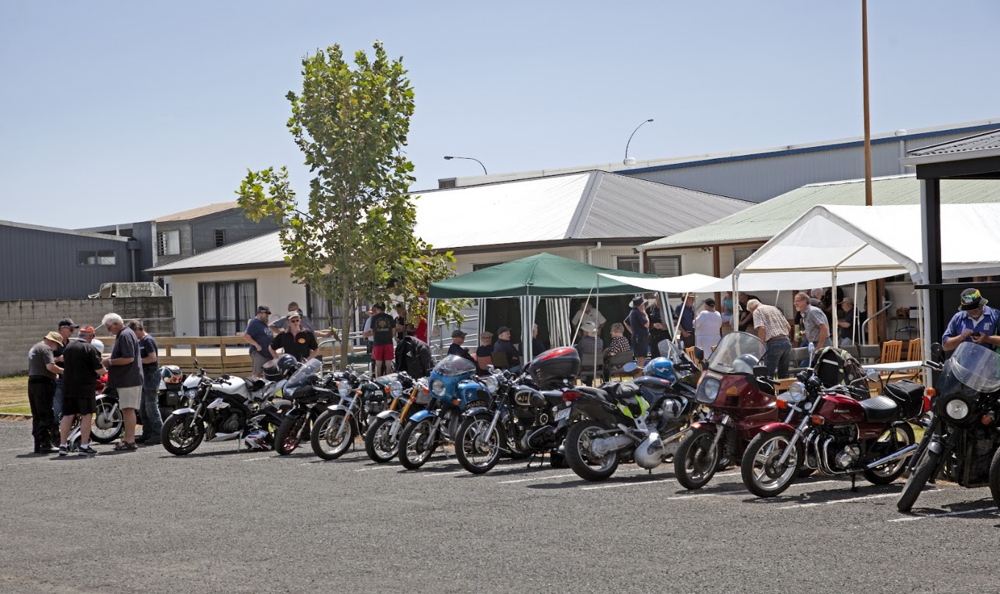

24–26 October 2026
50th anniversary
Classic Flyers Museum, Tauranga
Motorcycle display, start-up sessions, visiting clubs and our Sunday celebration luncheon.
More information →
Fifty years of motorcycling, friendship and shared knowledge in Tauranga and the Bay of Plenty.
Discover the club





Tauranga Classic Motorcycle Club has been bringing motorcycle enthusiasts together since 1976.
The motorcycles admired by our founding members were the great machines of their generation. Fifty years on, the classics have moved with the generations too.
From British icons to Japanese legends, European favourites and many more, each generation has motorcycles that inspire, excite and deserve to be preserved.
Our members restore, preserve, ride, share knowledge and enjoy the stories. Whether you ride, restore, tinker, admire or simply enjoy classic motorcycles, there’s a place for you here.
The bikes we owned. The bikes we wanted.
The stories we share. The roads we still ride.
The Tauranga Classic Motorcycle Club brings together people with an interest in classic motorcycles — whether you ride them, restore them, collect them or simply enjoy them.
Classic Flyers Museum, Tauranga
Motorcycle display, start-up sessions, visiting clubs and our Sunday celebration luncheon.
More information →Wednesday rides, weather permitting. Old Bikes Run on the first Sunday of each month.
Club Night: first Tuesday of the month at 7.30 pm.
Ride information →Classic motorcycles bring us together. The friendship, rides and shared experiences keep us coming back. Discover what membership has to offer.
Membership →The club will celebrate 50 years with a special event at the Tauranga Classic Flyers Museum from 24th to 26th October, Labour Weekend 2026.
From Saturday to Monday there will be a public display of motorcycles covering a wide range of classics from across the generations — a chance to enjoy the bikes, the history and the stories behind them.
A special celebration luncheon will be held on Sunday as an additional event within the anniversary weekend.
24–26 October 2026
Classic Flyers Museum, Tauranga
Saturday–Monday public classic motorcycle display • Sunday celebration luncheon
Details are in the poster — and we'd love you to join us.
Planning to attend our Labour Weekend celebration? Please select the registration form that applies to you.
Current members should use the member form. Former members, visiting club members, friends and other guests should use the visitor form.

A summer get-together for riders and friends.
Each year in mid-January, TCMCC hosts its Annual BBQ and invites riders from Tauranga, the wider Bay of Plenty, Waikato and Rotorua to join us.
The Club provides a complimentary meal for our visitors, while the gathering provides something just as important — a chance to catch up with old friends, meet other riders, share a few memories and perhaps plan the next adventure.
The Annual BBQ always attracts an interesting collection of motorcycles, with bikes of many makes, ages and styles gathered together. It is as much about the people and the stories as it is about the motorcycles.

The Tauranga Classic Motorcycle Club was established in 1976 by enthusiasts brought together by their interest in older motorcycles. Fifty years later the motorcycles remain important — but so do the friendships, knowledge and camaraderie that have grown around them.
Our members own and ride motorcycles spanning many decades and many marques. Some are beautifully restored, some remarkably original and others are simply old motorcycles still doing what they were built to do — being ridden.
Facebook helps TCMCC stay connected with fellow classic motorcycle enthusiasts — both within the Club and further afield. It is a place to share rides, motorcycles, photographs, stories and upcoming activities, and it also gives people interested in classic motorcycles an opportunity to discover the Club.
Our Facebook Page provides a public introduction to TCMCC, while our Facebook Group is the more active community where members and other enthusiasts can keep in touch and join the conversation.
Current stories from TCMCC members — Wednesday rides, touring adventures, motorcycles, projects and the places the road takes us.
Selected extracts and scans from the Club's earliest newsletters.
Explore the originals →
The first meeting, first run, founding members and the motorcycles that brought them together.
Read the story →
Photographs from the historical Club records. More motorcycles and their stories will be added later.
Explore the photographs →
Motorcycles, club runs and some of the roads that make getting there half the fun.
September–October 2026 — Southern Star
Magazine of the New Zealand BSA Motorcycle Owners’ Club. This issue includes a tribute to Les Harris, restoration of a BSA 650cc A10, Vinterskjelven and Auckland club notes.
President & Secretary: Bruce Partridge
Treasurer: Chris Clarke
Club Captain: Alan Sullivan
Committee: Geoff Morgan, Brian Mackie, Allan Roberts, Heinz Diener, Roger Gardner and Brian Yates.
Your committee can assist with club enquiries, rides, events and membership.
Send us an email, or if you are already part of the Wednesday Rides WhatsApp group, use the group to get in touch.
It's the people, the rides and the stories that make the club.
The Tauranga Classic Motorcycle Club has brought motorcycle enthusiasts together since 1976. Whether you've owned classic motorcycles for years, are restoring your first machine, or simply enjoy the motorcycles of yesterday, we'd be pleased to meet you.
Enjoy the rides. Join regular club outings, explore the roads together and enjoy the traditional coffee stop along the way.
Meet like-minded people. Club nights, rides and social occasions are a chance to make friends and share a common interest.
Share knowledge and experience. Talk motorcycles, restoration, maintenance and history with members who enjoy keeping the classics alive.
Be part of the story. Enjoy the club's archives and members' stories, and help carry its motorcycling heritage into the future.
You don't need a concours restoration or a shed full of motorcycles to belong. Come along, meet the members and see whether the club is for you.
Come to a Club Night
First Tuesday of the month — 7.30 pm
Come on a Ride
Contact the Club for the next ride details.
New members can apply to join, and current members can renew or update their details using our online membership form.